RackTrack · developer reference · 18 September 2026
RackTrack Changes, from the inside
Everything the sub-application does, tab by tab and number by number, written for the person who maintains it. Every figure here was read from the running code or from demo.racktrack.ai on 18 September 2026. Where the code and the screen disagree, that is written down too, in the last section.
Contents
- The shape of the thing
- The twelve tabs
- The dashboard, number by number
- Anatomy of a drift
- Twenty-two statuses
- The moves, and who may make them
- Roles and capabilities
- The rules that refuse
- The four clocks
- Verification
- The write
- Fingerprint and payload hash
- The eight reports
- Settings
- Exceptions and windows
- Notifications
- The eleven tables
- Where the code lives
- Known mismatches
The shape of the thing
Two repositories, one API, one sign-in.
RackTrack Changes is a separate front end that talks to the same server as the RackTrack app. It is not a separate product and it is not the portal. A technician photographs a rack in the app; the comparison against NetBox becomes a plan; deciding on that plan, assigning the work, approving it and writing it back to NetBox all happen here.
- Front end
- /Volumes/Racktrack/racktrack_approvals, a Vite and React app, about 1,950 lines. Built with VITE_BASE=/approvals/.
- Server
- Inside the main repo: server/lib/approvals/ is the engine, about 6,900 lines; server/routes/approvals/ is the HTTP surface, about 1,070 lines.
- Address
- demo.racktrack.ai/approvals/, served by Caddy with handle_path from /srv/approvals. The name on screen is Changes; the path is still /approvals so older links keep working.
- API
- Everything under /api/approvals. Forty-nine routes, plus the four ticket moves behind one of them.
- Sign-in
- Shared. From the phone the app trades its bearer token for a single-use key at POST /api/auth/handoff, good for 60 seconds; the browser opens the key, gets cookies and lands on the page already signed in.
- On a phone
- The app opens it in a web view of its own, full screen, with no address bar. Below 720 px every table becomes one card per row.
The twelve tabs
Each one in full: what it is for, what is on it, where the numbers come from, who is allowed to see it, and which table the information sits in.
The navigation is built in src/components/shell/Layout.jsx from a table called GROUPS, in three groups: the work at the top, then Records, then You. A row can carry a show test; a row without one is for everybody who is signed in. Below 860 px the rail folds into a drawer behind the three lines at the top left, and the top bar keeps only the menu, the name, the bell and your initials.
Two things are true of every tab and are not repeated below. First, you only ever see your own organisation's work. Every list route and every drift route is filtered to the caller's organisation, and there is no owner bypass: another organisation's drift answers 404, exactly as one that does not exist would. Second, no page decides anything for itself. The server sends the rows and, where there are counts, the filters that belong beside each count. The screen draws what it is given.
1. Dashboard everyone signed in
This is the page you land on, and it answers one question: where does the work stand right now. It counts drifts three different ways and puts the ones whose clocks have run out at the top, because those are the only ones that are actually late.
The first card is SLA, five tiles sorted so breached comes first, then at risk, then on track, then paused, then met. Underneath, if anything has breached, a short table of those drifts with a See all beside it. Then By status, twenty-two tiles, one for every status a drift can be in. Then, side by side, By priority with four tiles and Trend, a small table of how many drifts were raised and completed on each of the last seven days.
Every tile is a link. A tile with a count above zero opens the drift list with exactly the filters the server attached to that count, so the number you clicked and the list you land on can never disagree. The page does no arithmetic of its own at all.
All of it arrives in a single call to GET /api/approvals/dashboard. The server counts rows in approval_plans for the status and priority tiles, and joins approval_sla for the clock tiles. Nothing is precomputed and nothing is cached; the counts are as fresh as the request. If the dashboard answer does not carry the breaches or the trend, the page fetches them separately, the breaches as a five-row list and the trend from the trends report.
Anybody with a part in the workflow can open it, because a count of your own organisation's drifts gives nothing away that the list would not. When no clock has started anywhere it says "No SLA clocks are running." and the trend, with no days to show, says "No trend yet."
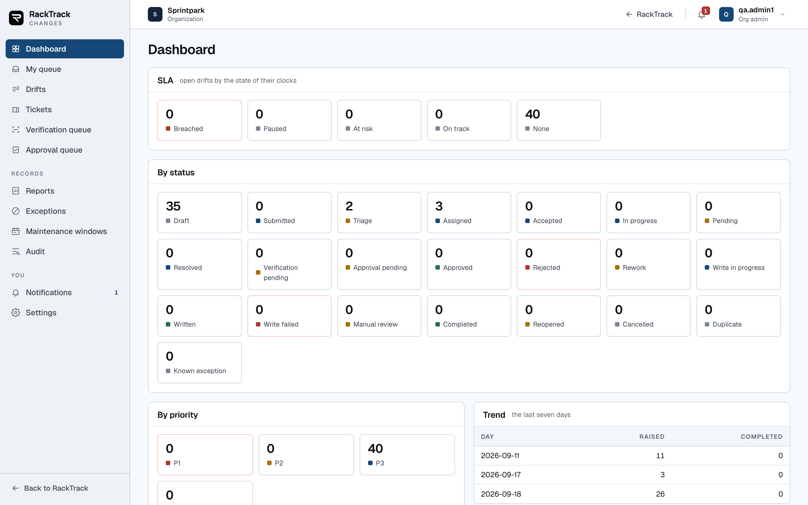
2. My queue everyone signed in
The dashboard tells you how the organisation is doing. This tab tells you what is waiting on you, and nothing else. It is the same drifts, cut a different way: grouped into sections by what each one is waiting for, in the order the server chooses to send them.
Three of those sections carry a button on every row, because they are the three things a person is usually queued for: Verify, Approve and Triage. Pressing one opens the drift with that action already asked for, so you land on the screen with the right dialog rather than hunting for the button. The number beside the page title is simply the sum of the sections, and each section shows its own count beside its heading.
It comes from GET /api/approvals/queue. The server works out the sections from two things together: the capabilities of whoever is asking, and the statuses of the drifts in their organisation. This is why two people looking at this tab at the same moment see completely different pages. An approver sees drifts waiting for a signature. A technician sees drifts waiting for a second scan. An admin sees the ones waiting to be triaged.
The tab has no storage of its own. Every row is a plan out of approval_plans; the grouping is worked out per request and thrown away. That is deliberate, because a queue that is stored goes stale the moment somebody else acts on a drift.
Everyone can open it, since a queue that holds nothing is a perfectly good answer. When there are no sections at all it says "Nothing is waiting on you", and a section that has emptied out says "Nothing here."

3. Drifts everyone signed in
The full list, and the page that everything else opens into. Click a dashboard tile, click a figure in a report, follow a link somebody sent you, and you arrive here with the filters already applied.
Nine columns: the drift number, the rack with its id underneath, the datacentre, and then chips for status, priority and risk, followed by the assignee, the SLA and when it was last touched. Six of those columns sort. Priority, risk and status do not sort alphabetically; they sort by their place in the workflow, so the order reads P1, P2, P3, P4 rather than alphabetically, which would be useless.
Above the table is a search box covering rack, drift number and person, which waits for you to stop typing rather than firing on every key, and nine filters behind a Filters button: status, datacentre, rack, priority, risk, assignee, SLA state and a From and To date. The number on the Filters button is how many are currently set, and Clear removes all of them.
Every filter lives in the address bar, and that is the whole design of this page. It means a tile, a report figure and a link you paste into a message all produce the identical list. It also means the page can carry a filter it has no control for: a key it does not recognise is kept, sent to the server exactly as it arrived, and shown as a small tag you can remove. Paging is by cursor, twenty-five rows at a time, and the page keeps a trail of the cursors it has seen so Previous works properly rather than re-running the query.
The rows come from GET /api/approvals/plans, which reads approval_plans; the assignee names on each row are gathered from that drift's rows in approval_tickets. Everyone signed in can open it, because it is scoped to their own organisation. With filters that match nothing it says "No drift matches these filters."
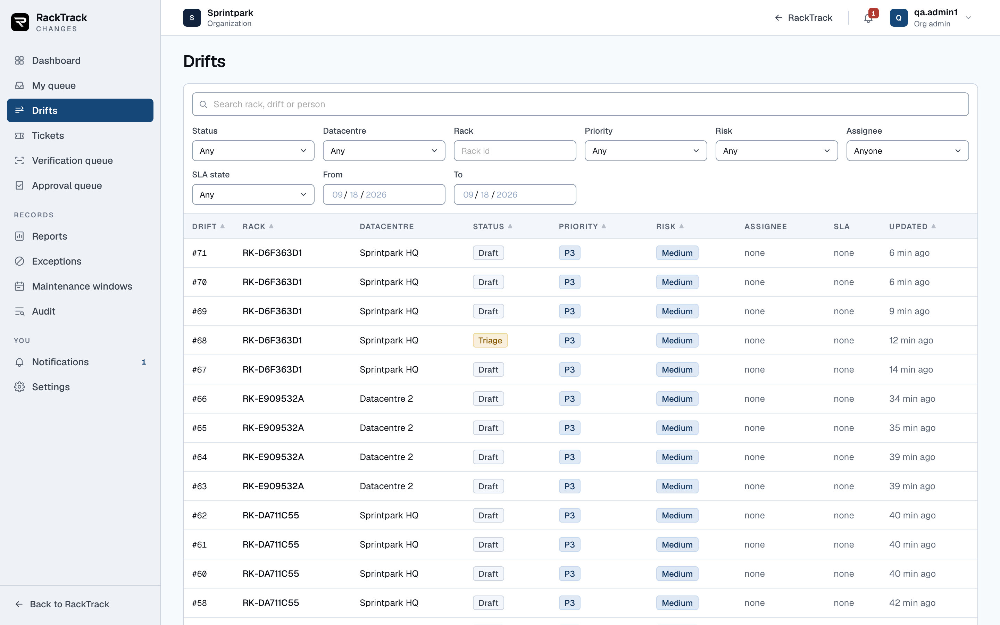
4. Tickets triage, assign, approve, audit or admin
A drift is a rack. A ticket is one job for one person. This tab is every ticket that has ever been raised, across every drift, which is what you want when the question is "who is holding what" rather than "how is that rack doing".
Eight columns: the drift it belongs to, the rack, the item itself as a type and a name, who it went to with their email underneath, the state of the ticket here, the ServiceNow record with its number as a link and its state in ServiceNow underneath, the clock, and when it was raised. A row opens the drift the ticket belongs to.
You can filter by ticket state and search across rack, item, person and ServiceNow number. The search is done in the browser over the two hundred rows the page loads, so it is instant but it does not reach past those rows. The count beside the title is the rows left after that search, not the total.
It comes from GET /api/approvals/tickets and the rows are approval_tickets, which is unique on the pair of drift and item, so one item can never carry two tickets. The assignee is stored three ways over, as a NetBox contact id, a RackTrack user id and an email address, because the person at the rack may exist in one of those systems and not the others. The ServiceNow number, its state and any error live in the same row.
A technician does not get this tab, and the reason is not secrecy. A technician does not hold a queue of other people's work; their own ticket reaches them by email and in the app. The tab is for the people who hand work out and the people who audit it. An empty result says "No ticket matches."
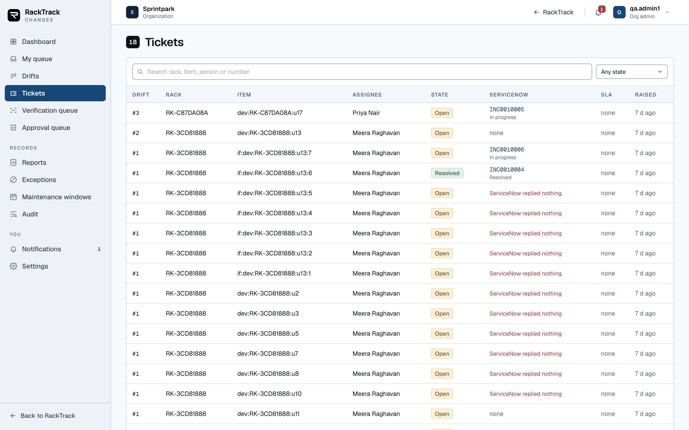
5. Verification queue verify, triage or admin
Before anybody signs a drift off, somebody has to go back and prove the work was actually done. This tab is the list of drifts sitting at that point and waiting for a second scan of the rack.
It is the same list component as Drifts, with the status filter fixed, so the columns, the search and the other filters all behave exactly as they do there. The status filter itself is hidden, because changing it would take you out of the queue you came for.
The data is the same call and the same table, GET /api/approvals/plans over approval_plans, with the status preset. What a verification actually compares, and why one failure fails the whole thing, is section 10.
The permission is the widest of any tab that is not open to everybody, because the capability it asks for is verify, and every ordinary member has that. This is on purpose: the person who can walk back to the rack with a phone is usually the technician, not the admin. Requiring an admin to run verifications would mean an admin has to be standing in the datacentre.
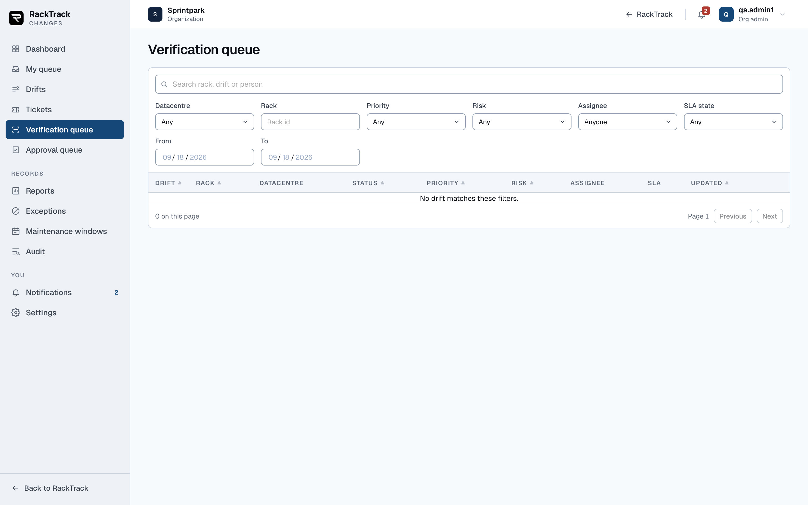
6. Approval queue approve, audit or admin
The drifts waiting for a signature, and the whole of an approver's job in one page. Again the same list component with the status fixed, reading the same call and the same table.
The reason it is its own tab rather than a saved filter is that an approver has exactly one thing to do and should not have to find it. An approver cannot triage, cannot assign and cannot write; those buttons do not appear for them anywhere, and the server refuses them even if the address is typed by hand.
Two rules bite hardest here and both are covered in section 8. The person who resolved a ticket on a drift is not offered the approve button at all, so a drift you worked on will appear in the list for your colleagues and not for you. And a drift with any item still undecided cannot be approved, so the queue holds things that look ready but are not quite.
An auditor can see this queue too. They can see what is waiting and who it is waiting on, but they have no button on it.
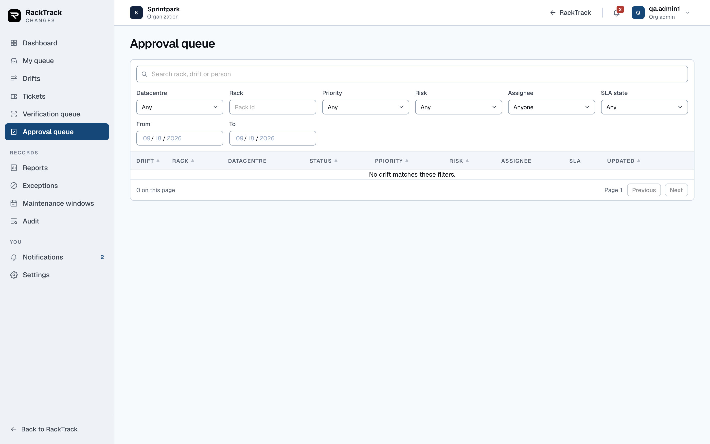
7. Reports admin, audit or triage
Eight flat tables behind eight tabs, for the questions a manager asks rather than the ones an operator asks. Backlog, SLA, Quality, Trends, Resolvers, Approvals, Writes and Exceptions. Section 13 says what each one answers.
Each report is a plain table with a CSV link beside the heading. No column sorts and no row is clickable, but a number above zero that carries filters becomes a link into the drift list, which is how you get from a figure in a report to the actual records behind it. Two of the eight, Approvals and Exceptions, return no filters, so those two have no way through.
A report is fetched with GET /api/approvals/reports/:name and downloaded from the same path with .csv on the end. Every figure is computed at the moment you ask, by querying approval_plans, approval_items, approval_tickets, approval_decisions and approval_sla. There is no reporting table, no nightly job and no cache, so a report can never be out of date and a slow report means a slow query rather than a stale one.
The three roles that can read it are the ones who are answerable for the numbers: the admin who runs the organisation, the auditor who checks it, and the site manager who triages. A report with no rows yet says "This report has no rows yet."
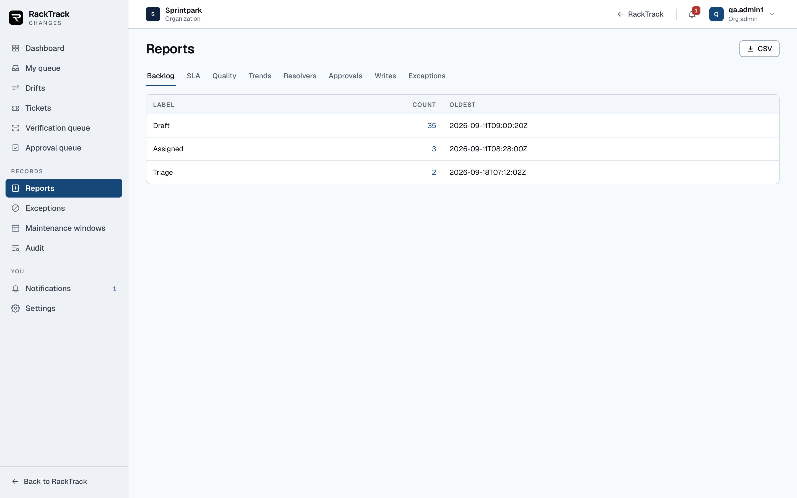
8. Exceptions read: admin, audit, triage or approve · write: admin or triage
Not every difference between a rack and the record is a mistake. Some are deliberate and everybody involved knows about them. An exception writes that decision down so the same difference stops being raised as a question every time somebody photographs the rack.
Eight columns: the item as a type and a name with the attribute underneath, where it applies as a datacentre with the rack underneath or the words "every rack", the kind, the state, the owner, when it expires or the word "never", the justification, and a Revoke button for those allowed to use it. There are no filters and no paging; the list loads whole, because an organisation with hundreds of exceptions has a different problem.
The state is worked out on the page rather than stored, and the order of the test matters: revoked beats expired, expired beats not yet started, not yet started beats review due, and anything left is active. The count beside the title is the active ones only, not the total, which is the number you actually want to know.
It comes from GET /api/approvals/exceptions and lives in approval_exceptions. In that table an empty field means any: no rack means every rack in the datacentre, no item type means any type, no attribute means the whole item. Revoking sets a timestamp; nothing is ever deleted.
Reading is open to four roles on purpose, and the reasoning is written into the code: an exception that only admins can see is a way of hiding drift, which is the opposite of what it is for. Creating and revoking need an admin or a site manager. An empty list says "No exceptions."
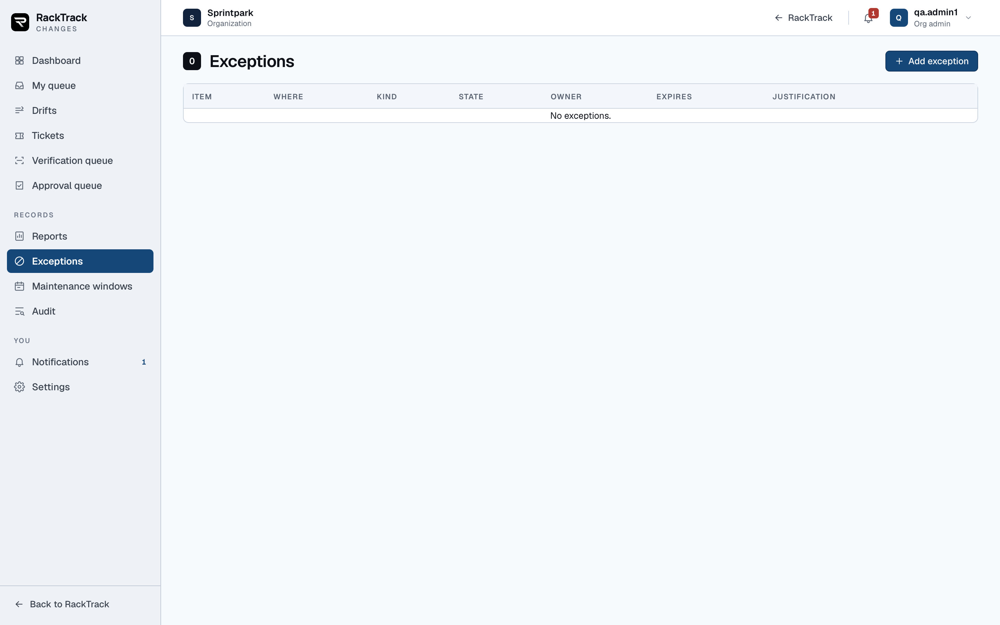
9. Maintenance windows read: admin, audit, triage or approve · write: admin or triage
A window is a span of time in one datacentre when everybody has agreed that work is happening. It exists for one reason, and it is a fairness reason rather than a workflow one.
Seven columns: the datacentre, the state, when it starts, when it ends, a note, who added it, and a Delete button for those allowed. The state is worked out on the page as you look at it: upcoming before it starts, open now while it is running, over once it has ended. A window is half open, so it includes its start instant and excludes its end instant.
It comes from GET /api/approvals/windows and lives in approval_windows, where a window always belongs to exactly one datacentre. Unlike an exception, deleting a window really deletes the row; there is no revoked flag.
A window changes nothing about the workflow. It does not change who decides, what needs approving, or what gets written. Its only effect is on the clocks: while a window is open, every clock on every drift in that datacentre is paused, and when it closes they resume with their targets moved out by exactly what the pause cost. Nobody is late for a change everyone agreed to. Section 9 covers how that arithmetic works.
An empty list says "No maintenance windows."
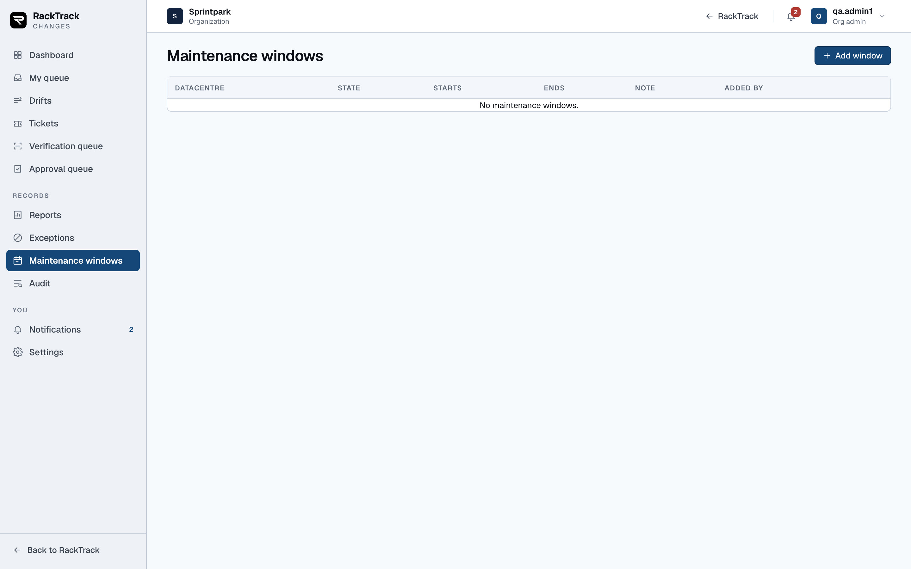
10. Audit audit or admin
Every move on every drift, in one place, newest first. This is the page you open when somebody asks who did what and when, and it is the page that makes the rest of the product defensible.
Seven columns: when it happened, which drift, which rack, what the action was, who did it, the status change written as one status to another, and the reason if there was one. A row opens the drift, so you can go from a line of history straight to the record.
The search box works in the browser across the drift number, rack, action, reason and person. Three more controls go to the server as well as being applied here: an action, a From date and a To date. The list of actions in that dropdown is built from the rows themselves rather than a fixed list, so it only ever offers you actions that actually occurred.
It asks GET /api/approvals/events. That route is the one assumption in the whole front end, and the page is honest about it: if the route answers 404, it falls back to loading the twenty-five most recent drifts and joining their histories, and it prints a notice saying that is what you are looking at. The pager disappears in that mode, because it is no longer a real page through the data.
The rows live in approval_events, and that table is the reason this tab can be trusted. It is append only, and the database enforces it: a trigger raises an error on any update, and another raises on any delete while the drift still exists. There is no route that writes to it directly and no screen that can edit it. The sub-heading on the page says read only, and that is a statement about the table, not about the screen.
Only an auditor or an admin can open it. With nothing matching it says "No events match."
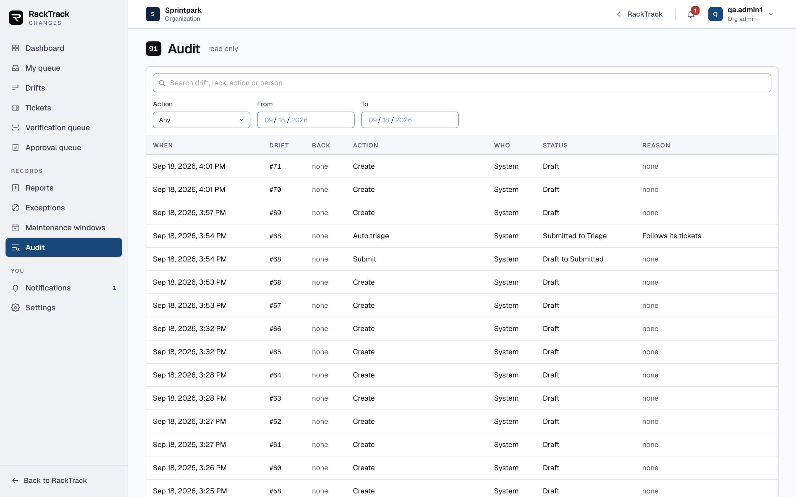
11. Notifications everyone signed in
Two tabs on one page. Inbox is what has been sent to you. Preferences is what you want to be sent in future.
Each notice in the inbox shows a dot if it is unread, its subject, how long ago it arrived, the body, and the name of the event that caused it. A notice about a drift carries an Open drift button, which marks it read on the way through. Mark all read appears only when something is unread, and it works through them one at a time. Opening this tab asks the server again rather than trusting the count the bell last polled, so Mark all read really does cover everything that has arrived.
The preferences tab is a table of all fifteen events with three columns: in the app, email, and Teams. Teams is always the word Off, and it is not a control. There are no tokens for it, and the server refuses the channel outright rather than accepting a setting it cannot honour.
The inbox comes from GET /api/approvals/notifications and the settings from .../prefs. Notices live in approval_notifications, one row per person per channel per event, each carrying a unique key made of the event, the drift, the version of the drift, the person and the channel. That version is what stops the same thing being sent twice while still letting a drift that goes round the loop again tell people about it again.
Everyone can open this tab, and everyone sees only their own. The bell in the top bar carries the same unread count and shows 99+ above ninety-nine. An empty inbox says "No notifications".
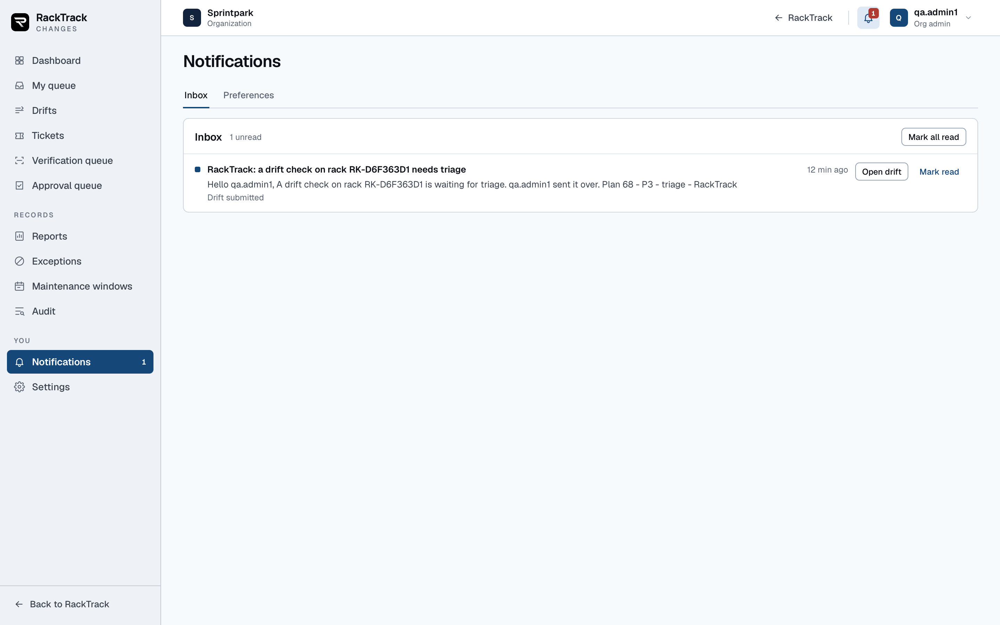
12. Settings admin and owner only
Everything on this page is per organisation. None of it is fixed in the product, and two organisations on the same server can run completely different targets, calendars and approval rules.
Five cards, each with its own Save button, because each writes a different key and a failure on one should not lose your work on the others. SLA targets is a grid of four priorities by four clocks, each cell a number and a unit, where the unit can be minutes, hours, business hours or business days. Business calendar sets the working days and the start and end of the day. Dual approval chooses which risk levels need two different people to sign. Escalation sets when a clock warns, breaches and escalates, as percentages of its own target. Notification defaults decides what a new person in the organisation receives.
A red star marks the fields that must be filled and there is one line at the top saying what the star means. Nothing else is marked, because an optional field needs no label.
Each card saves with PUT /api/approvals/settings/:key and the values live in approval_settings, one row per organisation per key. A key this page does not know about is left alone, and a value is written back in the same shape it was read in, so an older setting is never quietly reformatted.
Only an owner or an organisation admin can open it. Somebody else who types the address is told plainly: "Settings are for the organization admin and the owner."
Two of the five cards have real faults today, described in section 19. It is worth reading that before trusting what this page shows you.
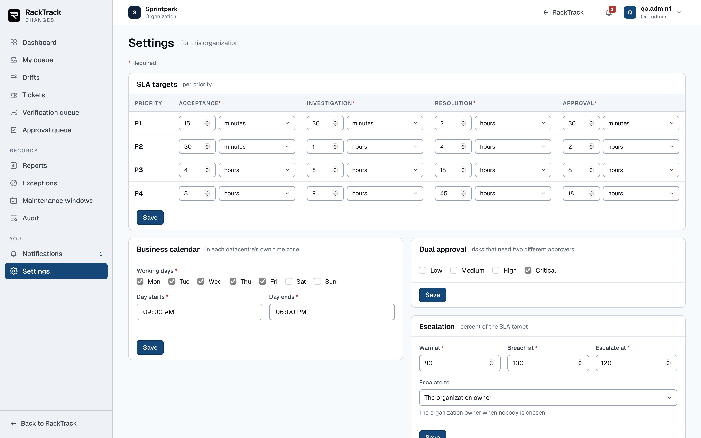
And all of it on a phone
The lists above are data tables, and a data table is the one thing that does not survive a narrow screen. The drifts table is 977 px wide. On a 390 px phone that meant three columns were visible and six were not: status, priority, risk, assignee, SLA and updated all sat behind a sideways drag inside a scroller with no visible bar, which most people never find.
Below 720 px every row is now a card instead. The first cell heads the card, and each remaining cell sits on its own line beside the name of its column. Nothing is hidden, nothing is abbreviated, and the page never slides left and right. Above 720 px the table is exactly as it was: the same header row, the same columns, the same sorting.
It is two small changes in one place each, which is why every list got it at once. The shared table component in src/components/ui/index.jsx now puts the column name on each cell and wraps the cell's contents, and one media block at the end of src/styles/ui.css does the rest. No page was touched.
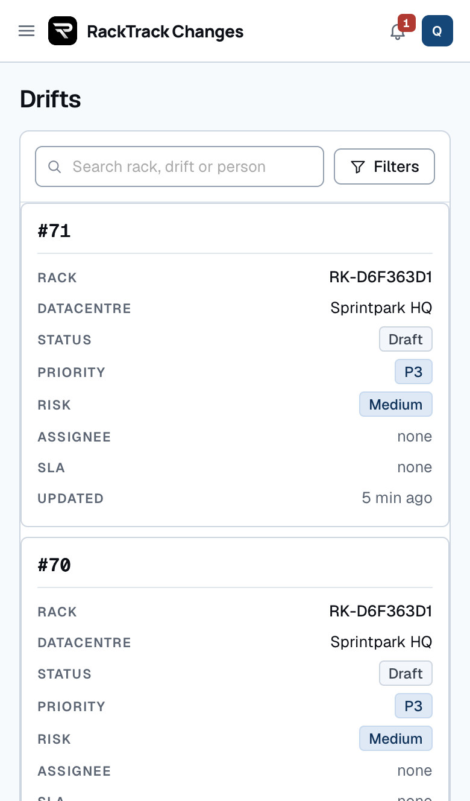
The dashboard, number by number
Where each figure comes from and what clicking it does.
One call, GET /api/approvals/dashboard, returns total, open, and three arrays: sla, priority and status. Each array row is { key, count, filters }. The page does no arithmetic of its own: it draws what the server sends, and a positive count becomes a link to /drifts carrying that row's filters.
Panel 1: SLA
Five tiles, in this order, counting open drifts by the state of their worst live clock.
| Tile | What it counts | Filter it links to | Live on 18 Sep |
|---|---|---|---|
| Breached | A clock past its breach mark | sla=breached&open=1 | 0 |
| At risk | Still running, past the warn mark | sla=at_risk&open=1 | 0 |
| Paused | Held by a change window or on hold | sla=paused&open=1 | 0 |
| On track | Running and not yet warned | sla=on_track&open=1 | 0 |
| None | No clock has started yet | sla=none&open=1 | 49 |
A drift takes the worst of its live clocks, in the order breached, at risk, paused, on track. Nothing running at all reads None. That is why a demo database full of drafts sits entirely under None: clocks start at assigned, not at creation.
Panel 2: By status
Twenty-two tiles, one per status, in workflow order, counting every drift rather than only the open ones. Each links to /drifts?status=<key>. The live shape on 18 September was 43 draft, 3 triage, 3 assigned and nothing else.
Panel 3: By priority
Four tiles, P1 to P4, counting open drifts, linking to priority=P<n>&open=1. All 49 open drifts were P3, which is the default a plan is created with.
The SLA breaches table
Underneath, a short table of the drifts whose clocks have breached, with See all beside it. Columns: Drift, Rack, Datacentre, Status.
The trend panel
Raised and completed per day for the last seven days. Worth knowing: the completed series is filtered on the row's created date, not its completed date, so it does not mean what the heading suggests. That is listed again in section 19.
Anatomy of a drift
The one screen where the work actually happens.
Route /drifts/:id. In order down the page: the header with the rack name and the drift number, a row of chips, the action bar, then Recorded versus observed, the work tickets, the verification record, the approval records, the write result, the timeline and the comments.
The chips carry status, priority, risk, category, datacentre, and each SLA clock that has anything to say.
The action bar is the interesting part. The server sends plan.next, the moves the machine allows this caller on this plan, and the bar shows only those. When it is absent the client derives them from the transition table. Either way the server has the last word: a refused move comes back as 409 and the reason is printed beside the button that was pressed.
When nothing is open to you it says so: "No move is open to you on this drift."
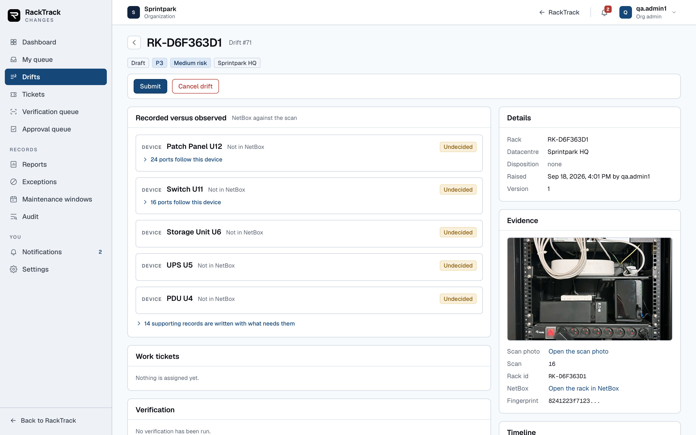
Items, and why 294 differences ask 10 questions
Every change the comparison reported becomes a row in approval_items. Three flags decide how it behaves.
| Flag | Meaning |
|---|---|
| supporting | Scaffolding: a Manufacturer, DeviceType, DeviceRole, Site, Location or Rack record that has to exist before the real thing can. Nobody is asked about it. |
| decidable | A person is asked to approve or reject it. |
| following | It follows a parent, named by parentUid. Ports follow their device: decide the switch and its ports go with it. |
That is the whole trick. A rack with 294 differences is mostly ports; they follow their devices, so the admin answers one question per device.
Action traits
From machine.js. Any action not in this table changes nothing and is reported rather than decided.
| Action | changes | ticketable | assignFirst | Note |
|---|---|---|---|---|
| create | yes | yes | yes | Not in NetBox at all |
| update | yes | yes | yes | In NetBox with different values |
| rebind | yes | no | no | Only re-labels a record already in NetBox. Decided as it is; there is nothing to check at the rack. |
The six item decisions
Undecided With assignee Approved Rejected Excepted Not applicable
Stored as pending, ticketed, approved, rejected, excepted, not_applicable.
Twenty-two statuses
In workflow order, with what each one means.
| # | Status | What it means |
|---|---|---|
| 1 | draft | The comparison is filed but not yet handed to the admin. |
| 2 | submitted | The creator has sent it; the server has not picked it up yet. |
| 3 | triage | With the admin to be prioritised, assigned, rejected, marked duplicate or excepted. |
| 4 | assigned | At least one ticket is out and not yet accepted. |
| 5 | accepted | Every open ticket has been taken, none started. |
| 6 | in_progress | Somebody is actually working a ticket. |
| 7 | pending | Every open ticket is waiting on something outside RackTrack. |
| 8 | resolved | No ticket is open; all have findings. |
| 9 | verification_pending | Waiting for the second scan that proves the fix. |
| 10 | approval_pending | Verified or skipped; waiting for a signature. |
| 11 | approved | Signed. The payload hash is on the plan and a write may run. |
| 12 | rejected | Turned down with a reason code and a comment. An admin may send it back. |
| 13 | rework | Sent back by an approver for more work. |
| 14 | write_in_progress | The controlled write is running. |
| 15 | written | The write finished with no failures. NetBox has not been re-read yet. |
| 16 | write_failed | NetBox refused at least one object, or the write threw. |
| 17 | manual_review | A write nobody can get to finish, handed to a person. A handover, not a failure. |
| 18 | completed | Written and the check after the write passed. |
| 19 | reopened | Sent back round: a failed verification, a failed post-write check, or an admin reopening. |
| 20 | cancelled | Terminal. Dropped. |
| 21 | duplicate | Terminal. Duplicates another plan, named by duplicateOf. |
| 22 | known_exception | Terminal. Covered by an exception, named by exceptionId. |
Three derived sets
- Working is assigned, accepted, in_progress, pending. These four are not chosen by anybody. The plan takes whichever one its tickets add up to: any ticket open means assigned, otherwise any accepted means accepted, and so on. That is why moves between them never appear as buttons.
- Terminal is cancelled, duplicate, known_exception. Nothing moves a plan out of these.
- Open is everything except completed, rejected and the three terminal ones.
The moves, and who may make them
Seventeen buttons, each with a precondition.
The client's table is src/lib/moves.js; the server's is TRANSITIONS in machine.js. They agree, and the server wins when they do not.
| Button | From | To | Who | What it needs |
|---|---|---|---|---|
| Submit | draft | submitted | creator, admin | A scan, and something that needs a decision |
| Triage | triage | assigned | admin, site manager | Every item assigned first |
| Assign | triage, assigned, rejected, rework, reopened | assigned | admin, site manager | Somebody to assign to |
| Accept | assigned | accepted | assignee, admin | An open ticket |
| Start work | accepted, pending | in_progress | assignee, admin | |
| Set pending | accepted, in_progress | pending | assignee, admin | A pending reason from the list |
| Resolve | in_progress, pending | resolved | assignee, admin | A finding on every resolved ticket |
| Verify | verification_pending | approval_pending | technician of the Site | A passing verification scan |
| Skip verification | verification_pending | approval_pending | admin only | A reason |
| Approve | approval_pending | approved | approver, not the resolver | Every item decided, and a payload hash |
| Send for rework | approval_pending | rework | approver, not the resolver | Reason code and comment |
| Reject | triage, approval_pending, write_failed, manual_review | rejected | depends on the status | Reason code and comment |
| Write to NetBox | approved | write_in_progress | admin | The hash still stands, and something to write |
| Try the write again | write_failed, manual_review | write_in_progress | admin | Same, plus a reason from manual review |
| Send to manual review | write_failed | manual_review | admin | A reason |
| Reopen | completed | reopened | admin | A reopen reason from the list |
| Cancel drift | draft, triage, pending, manual_review | cancelled | admin, or the creator on a draft |
Ticket moves
| Action | From ticket status | To |
|---|---|---|
| accept | open | accepted |
| start | open, accepted, pending | in_progress |
| pending | open, accepted, in_progress | pending |
| resolve | open, accepted, in_progress, pending | resolved |
A ticket's own statuses are open, accepted, in progress, pending, resolved and closed.
Roles and capabilities
What GET /api/approvals/me answers, and where it comes from.
Seven capabilities are computed from the RackTrack role alone. The plan is not consulted here; per-plan scoping happens later, in the machine and in the read rules.
| Role | triage | assign | approve | write | verify | audit | admin |
|---|---|---|---|---|---|---|---|
| owner | yes | yes | yes | yes | yes | yes | yes |
| org_admin | yes | yes | yes | yes | yes | yes | yes |
| site_manager | yes | yes | — | — | yes | — | — |
| member (technician) | — | — | — | — | yes | — | — |
| approver | — | — | yes | — | — | — | — |
| auditor | — | — | — | — | — | yes | — |
triage and assign read the same list, so they are never different in practice. write is owner and org admin only, which is what makes "an admin approves and writes" true.
The rules that refuse
The five that matter, and the words the server uses.
Refusals map to HTTP like this: not found 404, bad request 400, wrong role 403, and a guard or an impossible transition 409.
1. The person who did the work cannot sign it off
Approve, reject and rework from approval_pending all carry notResolver. The check matches on user id or username against the tickets. The move is not merely refused, it is not offered: the server leaves it out of plan.next, so the button never appears.
2. Assign before you decide
A finding counts only when the ticket is resolved and the finding is not blank. Related refusals: "n items are still waiting to be assigned" on triage, "assign at least one item to somebody first", "a ticket on this plan is still open", "every resolved ticket needs a finding", and at approval "n items are still undecided".
The exception is rebind: "a rebind only re-labels a record already in NetBox; approve or reject it, there is nothing to check at the rack."
3. A technician never decides
Enforced twice, at the route gate and again in the service, so typing the address by hand achieves nothing.
4. Only an approval writes
The write carries exactly three kinds of object: scaffolding nobody was asked about, every decidable item a person approved, and the ports following an approved device. Everything else is excluded by uid. Refusals: "nothing on this plan was approved for writing", and for the wrong role "An admin approves and writes. Send this plan to yours to review."
5. Nothing is written if NetBox moved
Before any write the server compares NetBox again and re-fingerprints it. If the fingerprint has moved, the plan is pushed back to approval_pending with its payload hash cleared, an audit row is written, and the caller gets a 409. Nothing is sent to NetBox at all.
On a retry the test is more careful, because a partial write has already changed NetBox: every row the fresh comparison still wants must be a row of this plan with the same action and the same field changes, and every row of the plan that has vanished must be one this plan itself wrote. That is what writtenUids is for.
Other guards worth knowing
| Guard | What it says |
|---|---|
| submit | "a plan needs the scan it came from before it can be submitted"; "nothing on this plan needs a decision; cancel it instead" |
| pendingReason | "a pending reason is needed, one of: awaiting_requester, awaiting_vendor, awaiting_change_window, awaiting_access, awaiting_parts, awaiting_external_team" |
| verified | "a passing verification scan is needed first"; skipping needs an admin and a reason |
| approve | "the approval has nothing to sign: no payload hash"; "this plan needs a second approval, and it has to come from a different person" |
| postWritePassed | "a passing check of NetBox after the write is needed first" |
| duplicate | "a plan cannot be a duplicate of itself" |
A move that does not exist at all reads, for example, "a plan that is draft cannot become approved". A move for somebody else reads "This is for an approver." or "The server makes this move itself."
The four clocks
What starts them, what stops them, and how they are paused.
| Clock | Starts when the plan becomes | Met when it becomes |
|---|---|---|
| acceptance | assigned | accepted, in_progress, pending, resolved, verification_pending |
| investigation | accepted | in_progress, resolved, verification_pending |
| resolution | assigned | resolved, verification_pending |
| approval | approval_pending | approved, rejected, rework |
In words: acceptance is handed out to taken; investigation is taken to started; resolution is handed out to every ticket answered; approval is put up to signed, rejected or sent back.
The targets, in minutes unless marked
| Priority | Acceptance | Investigation | Resolution | Approval |
|---|---|---|---|---|
| P1 | 15 | 30 | 120 | 30 |
| P2 | 30 | 60 | 240 | 120 |
| P3 | 240 | 480 | 2 business days | 480 business |
| P4 | 480 | 1 business day | 5 business days | 2 business days |
At risk, breached, paused
Three marks, as a percentage of the target: warn at 80, breach at 100, escalate at 120. The words on screen come out like this:
- On track - running, not yet past the warn mark.
- At risk - still running, but the tick has stamped warnedAt.
- Breached - the row status is breached, stamped at the breach or escalate mark.
- Paused - held by a change window, or the resolution clock while the plan is on hold.
- None - no clock has started.
A plan shows the worst of its live clocks, in that order.
Pauses
Two things pause a clock. Setting a plan to pending pauses the resolution clock only, with the reason "the plan is on hold". An open maintenance window pauses every clock the tick sees, with the reason "inside a change window".
Only a row in status running is paused, so a window opening under an already breached clock does not pause it.
The calendar and escalation
Default working days Monday to Friday, 09:00 to 18:00, no holidays, in the datacentre's own time zone. An unknown time zone falls back to UTC silently, which is wrong by hours but never by days and never throws inside a clock tick.
The tick runs every 60 seconds and fires each of warn, breach and escalate once, recording it on the row so a restart does not resend. An approval clock also emits approval_overdue when it breaches or escalates.
Verification
A second scan of the same rack, compared the same way.
A verification is a newer scan of the same rack, put through the same comparison a preview uses, then read item by item. There are two kinds.
post_fix, before approval
- The uid is no longer in the fresh comparison: pass, marked gone, "it no longer differs from NetBox, so it has already been put right". The item is then set to Not applicable with the disposition remediate, and its children follow.
- Same action and the same stable difference: pass, "the second scan sees the same difference".
- Anything else: fail, "the second scan reports X, not Y" or "the second scan sees a different value". What was actually seen is kept.
post_write, after the write
Only approved items are checked, and each must have disappeared from the comparison. "NetBox now matches what was written", or it does not.
A passing post_fix moves the plan to approval_pending. A passing post_write moves it to completed. Either failing moves it to reopened, adds one to the reopen count and records the reason as verification_failed or write_mismatch.
Any technician of the Site may run it, including the person who reported the drift. The record stores who did it, which is the point: it is evidence, not a permission. An admin may skip it instead, with a reason, and the skip is stored on the plan.
Refusals worth recognising: "send the id of the new scan of this rack", "that scan is of a different rack", and "that is the scan this plan was compared from; scan the rack again".
The write
Twelve steps, and what each one protects.
- Resolve the actor and the plan. Not visible to you, 404.
- Check the role before touching NetBox at all. Not an admin, 403.
- Prepare. Load the scan snapshot and the NetBox client for this organisation.
- Compare NetBox again, live. A throw here is a 400 saying NetBox could not be compared.
- The pre-check, in one transaction. Status must be approved, write failed or manual review. Re-check the fingerprint, and check the approval on record signed this exact payload hash. If any of that fails nothing is written: the plan goes back to approval pending with its hash cleared.
- Nothing to write? An approved plan with zero targets moves straight to completed, and the answer says it wrote nothing.
- Move to write_in_progress and work out the targets and the filtered payload.
- Take a pre-snapshot of up to 250 objects, each read by uid, trimmed to id, name, status, the RackTrack uid and exactly the fields being changed. A lookup that throws is recorded, never treated as a failed write.
- Push. A throw aborts to write_failed with the error, the attempt counter up by one, and writtenUids preserved.
- Take a post-snapshot.
- Record the result. Counts, what was written, what failed and why, and writtenUids as the union of this attempt and the last. Any failure means write_failed; none means written.
- Check NetBox after the write. Pass means completed. Fail means reopened with write_mismatch.
A failure sends exactly one email, to the person who pressed the button, naming every object NetBox refused with its reason, how many went through first, and what to do next. Manual review is a handover, not a failure state.
Fingerprint and payload hash
Two hashes, two different jobs.
Both are SHA-256 truncated to 32 hex characters, computed over rows of uid, action and the stable JSON of the difference, joined by a NUL byte so two rows can never run together, sorted so order does not matter, and taken only over actionable changes.
| fingerprint | payloadHash | |
|---|---|---|
| Computed over | Every actionable change the comparison found | Only what a write would carry: scaffolding, approved items, and children of approved parents |
| Answers | Has NetBox moved since we compared? | Is this still the same set of changes that was signed? |
| Stored on | approval_plans.fingerprint | approval_plans.payload_hash and approval_decisions.payload_hash with plan_version |
The consequence to hold on to: rejecting one more item after an approval changes the payload hash, so the approval no longer stands and the write is refused with "the items have changed since this plan was approved". An approval is a signature on a specific set of changes and their values, not on a plan number.
The eight reports
One flat table each, with a CSV beside it.
| Key | Tab | The question it answers |
|---|---|---|
| backlog | Backlog | What is open, grouped so you can see where it is stuck. |
| sla | SLA | How the clocks are doing: on track, at risk, breached, paused. |
| quality | Quality | How often work comes back: rejections, rework, reopens. |
| trends | Trends | Raised and completed per day. |
| resolvers | Resolvers | Who is resolving tickets, and how many. |
| approvals | Approvals | Who approved what, and how long it took. |
| writes | Writes | What was written, what failed and why. |
| exceptions | Exceptions | What is being kept rather than fixed, and what expires soon. |
Every report is fetched as GET /api/approvals/reports/:name and downloaded as the same path with .csv. A figure above zero that carries filters becomes a link into the drift list; the Approvals and Exceptions reports return no filters, so those two have no drill-through.
No column in any report is sortable and rows are not clickable. Navigation is by tab only.
Settings
Five keys, per organisation, nothing fixed in the product.
| Key | Card | What it holds | Default |
|---|---|---|---|
| sla_targets | SLA targets | Four clocks per priority, each a number and a unit: minutes, hours, business hours or business days | The table in section 9 |
| calendar | Business calendar | Working days, day start, day end, holidays, time zone | Mon to Fri, 09:00 to 18:00, no holidays |
| dual_approval_risks | Dual approval | Which risk levels need two different approvers | ['critical'] |
| escalation | Escalation | Warn, breach and escalate as percentages of the target | 80, 100, 120 |
| notification_prefs | Notification defaults | What a new person receives, per event and channel | In the app and email on, Teams off |
Each card saves on its own with PUT /api/approvals/settings/:key. A key the screen does not know about is kept, and a value is written back in the shape it was read in.
Validation messages you will meet: "Enter a target above zero for P1 acceptance.", "Choose at least one working day.", "The day must end after it starts.", "Warn must come before breach, and breach no later than escalate.", and from the server "in-app and email are mandatory and cannot be turned off".
Exceptions and windows
Two records that change how drift is handled.
An exception
A difference somebody has decided to keep. Scope is the caller's organisation, always; a datacentre and a rack narrow it and never widen it. Every empty field means any: no rack means every rack, no item type means any type, no attribute means the whole item. An item name may end in * for a prefix match.
Rules on creation: the justification must be at least ten characters, and an expiry date is mandatory so an exception cannot become permanent by accident. Both are refused in plain words: "say in a sentence why this difference is accepted" and "an exception needs a date it expires on, so it cannot become permanent by accident".
When a plan is created, every live exception is matched against its undecided items. A match sets the item to Excepted with the reason code known_exception and a note naming the exception, and the item's children follow. Items already decided are left alone, so applying twice is safe.
Expiry is passive: once past, it simply stops covering new items. Revoking is a single timestamp. Neither un-marks anything already applied - those were answered at the time, and history is not rewritten. The screen says so: "stops being excepted. The record is kept."
An attribute exception can never hide a new device, because a create has no fields to change.
States on screen, in the order they are tested: Revoked, Expired, Not started, Review due, Active. The header count is the active ones.
A maintenance window
A span of time agreed for one datacentre. Half open: inclusive of the start, exclusive of the end. A plan raised inside one is stamped with the window id and an event saying so.
Deleting a window is a hard delete; there is no revoked flag. States on screen: Upcoming, Open now, Over.
Notifications
Fifteen events, two channels, three that always go out.
| Event | Goes to | Channels | Always |
|---|---|---|---|
| submitted | triage | app, email | |
| assigned | assignee | app, email | |
| p1_p2_created | admin | email only | |
| sla_warn | assignee, admin | app, email | |
| sla_breach | assignee, admin, owner | app, email | yes |
| sla_escalate | owner | app, email | yes |
| pending | creator | app, email | |
| resolved | creator, admin | app, email | |
| verification_failed | assignee, admin | app, email | |
| approval_requested | approver | app, email | |
| approval_overdue | approver, owner | app, email | |
| approved | creator, assignee, admin | app, email | |
| rejected | creator, assignee, admin | app, email | |
| completed | creator, admin | app only | |
| write_failed | admin | app, email | yes |
Recipients resolve against the organisation's users. owner falls back to the org admins when the organisation has no owner account, because an escalation that reaches nobody is worse than one that reaches them. A person mentioned twice is written once, first mention winning.
The dedupe key is event, plan, plan version, person and channel. The same event heard twice for the same version of the same plan is written once; the version is in the key so a plan that goes round again does tell people again.
Teams is refused outright until tokens exist: "Teams notices are off until the tokens for them exist." A listener never breaks a request.
The eleven tables
All in the same SQLite database as the rest of the server.
| Table | One row is | Worth knowing |
|---|---|---|
| approval_plans | One drift | Carries status, priority, risk, both hashes, version, the pre and post snapshots and the result. Unique partial index on legacy_id for the JSON plans that were imported. |
| approval_items | One change the comparison reported | Unique on plan and uid. Holds the three flags, the decision, who decided and when. |
| approval_tickets | One work ticket, at most one per item | Unique on plan and item uid. Holds the assignee three ways over, the finding, the disposition and the ServiceNow record. |
| approval_decisions | One signature | Stage first or second, the payload hash and the plan version it signed. |
| approval_verifications | One verification run | Kind, scan, result, who, and the per-item detail. |
| approval_comments | One comment | Internal or shared, optionally against one item. |
| approval_events | One thing that happened | Append only, enforced by triggers that raise on update and on delete while the plan still exists. |
| approval_sla | One clock run | Paused milliseconds are in the clock's own units. A plan that goes round again gets fresh rows. |
| approval_notifications | One notice to one person on one channel | Unique dedupe key. Skipped rows are kept but never shown. |
| approval_exceptions | One accepted difference | Null means any. Revoke is a timestamp, never a delete. |
| approval_windows | One change window | Belongs to exactly one datacentre. Delete is a real delete. |
A twelfth, approval_settings, is a key and value per organisation.
Where the code lives
If you are looking for something, start here.
Server, the engine
| File | Lines | What it owns |
|---|---|---|
| service.js | 1958 | Everything a request actually does. The biggest file; start elsewhere. |
| store.js | 1229 | The tables, the queries and the transactions. |
| sla.js | 580 | The four clocks, the calendar, the tick, escalation. |
| machine.js | 557 | Statuses, transitions, guards, roles, action traits. |
| shape.js | 411 | Fingerprint, payload hash, which items a write carries. |
| notify.js | 380 | The fifteen events, who gets them, the wording. |
| reports.js | 372 | The eight reports and their CSVs. |
| verify.js | 341 | The second scan and what it proves. |
| exceptions.js | 336 | Exceptions and maintenance windows. |
| write.js | 288 | The controlled write, the snapshots, the retry. |
| migrate.js | 230 | The one-time import of the JSON plans. |
| poller.js, bus.js, connections.js | 178 | ServiceNow polling, the event bus, the NetBox client per organisation. |
Server, the routes
server/routes/approvals/: index.js mounts the optional siblings; plans.js is the bulk of it; then verify, write, sla, notifications, reports, exceptions, windows, settings_shape and http.js for the error mapping.
Front end
src/pages/ is one file per tab. src/components/shell/Layout.jsx holds the navigation, the top bar, the bell and the drawer. src/lib/vocab.js is every fixed list and the word a person reads for each code - start there when a label looks wrong. src/lib/moves.js decides which buttons the action bar offers. src/components/ui/index.jsx holds the shared table that every list uses.
Deploying
bash deploy/deploy-demo.sh approvals builds with the right base path, rsyncs to ./approvals-dist on the host, validates the Caddy file and checks all three sites answer. The whole thing takes about a minute.
Known mismatches
Places where the screen and the server disagree. None of these is invented; each was read from the code on 18 September 2026.
These are real, they are not fixed, and knowing them will save you an afternoon.
| # | Where | What is wrong |
|---|---|---|
| 1 | Escalation card in Settings | The screen reads and writes warnPct, breachPct, escalatePct; the API shape is warnAt, breachAt, escalateAt. So the card always shows the 80 / 100 / 120 defaults whatever is stored, and saving is refused. The card cannot read or save. |
| 2 | Escalation card | escalateToUserId exists only on the screen. No server field corresponds to it. |
| 3 | Notification preferences | Saving personal preferences silently does nothing: the client wraps the body as { prefs } but the route reads the flags at the top level, so nothing matches and no error is raised. |
| 4 | Notification preferences | The screen looks for mandatory; the server sends always. So the three forced events are never greyed out and the explaining notice never appears. |
| 5 | Notification preferences | The shape fed into the table is the organisation shape, not the per-event one, so every box shows ticked regardless of what is stored. |
| 6 | Organisation notification defaults | The per-event defaults written by the settings screen are stored under events, which the notifier never reads. They round-trip but have no effect at run time. |
| 7 | Escalation recipients | The recipient lists are stored and validated but nothing reads them. The real table in notify.js is hard-coded. |
| 8 | Reports | The page reads c.label for column headings; the server sends c.title. All eight reports render generic headings. |
| 9 | Trends report | The completed series is filtered on the created date, not the completed date. |
| 10 | Quality report | The rework row counts decisions but links to plans in status rework, which is a different population. |
| 11 | Backlog and quality | They mix the full visibility rule with a raw datacentre filter, so the two diverge for a member or a site manager. |
| 12 | Add exception form | It requires datacentre, item type and item name; the server treats all three as optional wildcards. An organisation-wide exception can be made through the API but not the form. |
| 13 | Maintenance windows page | It never loads the user list, so Added by falls back to a user id unless another page loaded them first. |
| 14 | Audit page | The cross-plan events route is assumed rather than contracted. If it 404s the page quietly joins the 25 most recent drifts instead, which is not the same answer. |
Also not built, deliberately
- Teams alerts. There are no tokens. The channel is refused at the route rather than failing silently.
- The intelligence phase of the original specification.
- The write is one long request rather than a job with a status you can poll. It works, and a large write takes about a minute with the page following it.
- Two ports read with the same name still fail a write until the rack is photographed again.
Every number, message and rule above was read from the code or from the running server on 18 September 2026. If something here stops matching the code, the code is right and this is out of date; the files in section 18 are where to check.